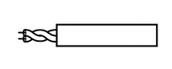
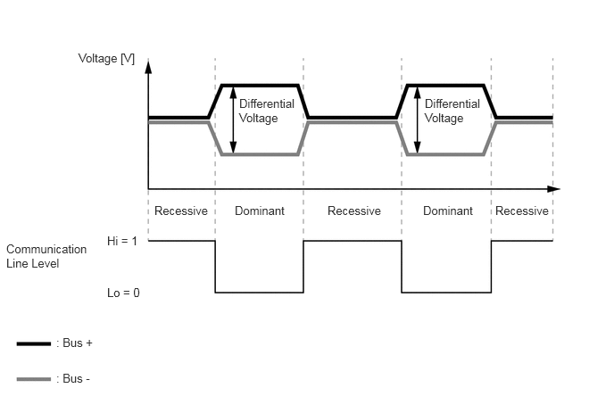
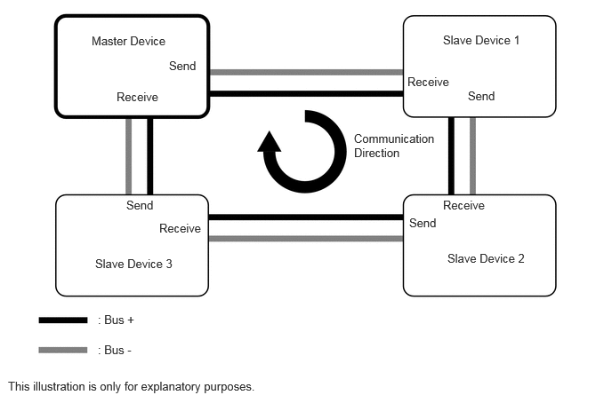

| Last Modified: 10-07-2025 | 6.11:8.1.0 | Doc ID: NM100000002GB1K |
| Model Year Start: 2024 | Model: Tacoma | Prod Date Range: [12/2023 - ] |
| Title: NETWORKING: MULTIPLEX COMMUNICATION SYSTEM [MOST]: GENERAL; 2024 - 2026 MY Tacoma Tacoma HV [12/2023 - ] | ||
GENERAL
OUTLINE
(a) Media Orientated Systems Transport (MOST) communication, which communicates with the audio system, is used as a communication system to simplify vehicle wire harnesses and achieve high-speed communication.
MOST Specifications
|
Protocol |
Specifications |
|---|---|
|
Communication Speed |
50 Mbps |
|
Communication Wire |
Shielded Twisted-pair Wire |
|
Drive Type |
Differential Voltage Drive |
|
Data Length |
0 - 128 Byte (Variable) |
(b) Communication Wire
(1) A shielded twisted-pair wire is used for MOST communication.
|
Communication Wire |
Outline |
|
|---|---|---|
|
Shielded Twisted-pair Wire |
 |
This communication wire is a shielded pair of twisted wires. Communication is driven by applying different voltages to the 2 lines in order to send a single signal. This system, which is called a "differential voltage drive", reduces the effects of electrical noise. |
(c) MOST communication consists of two communication lines (buses), bus+ and bus-. The system uses the differential voltage of the communication lines to determine the communication line level* and transmits a digital signal using an exclusive communication protocol (communication rules).
HINT:
*: The communication line level has a dominant level and a recessive level, and the MOST communication logically calculates the dominant level as "0" and the recessive level as "1".
(d) MOST Communication Protocol (Communication Rules)
(1) MOST communication uses a master/slave system (single master system)* which has a ring-shaped network structure that centers multiple slave devices (controlled side) around a master device (control side) and uses separate ports for sending data.
HINT:
*: The master/slave system (single master system) uses a master device to manage the timing at which slave devices send information to prevent multiple slave devices from simultaneously sending information over the communication line, making smooth and secure data transmission possible.
(2) The communication line is ring-shaped and only sends data in a single direction. Therefore, if an error occurs in one or more devices that make up the ring, MOST communication cannot be used to send data. (All devices and functions that make up the ring using MOST communication are affected. For example, audio may not be output or operations may not be possible.)
(e) MOST communication can be used to send and receive various types of data, such as audio data.